The Law of Cosines are used when the Law of Sines are not applicable to solve a triangle.
It is used to solve problems that lack a complete side-angle pair.
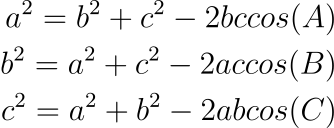
This formula is commonly used to find the Sides of the Triangle; it is used for solving problems given 2 angles and 1 side.
There is also a variant used to find the Angles of the Triangle instead.
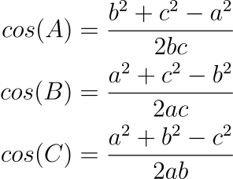
Example:
∠B=75°, a=12, c=15
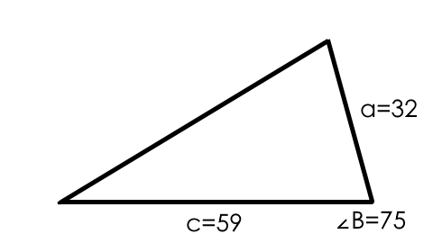
Use the formula for one of the missing sides and substitute the given values.
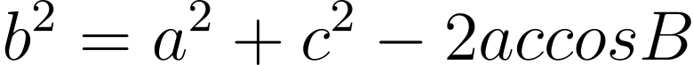
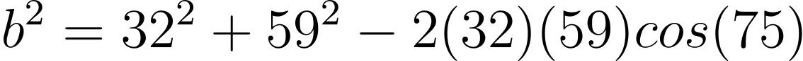
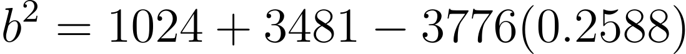
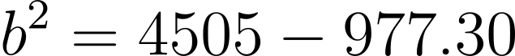
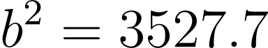
Final side length:
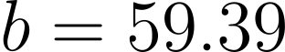
Using the angle version of the Sine law, we can find the rest of the unknown angles.
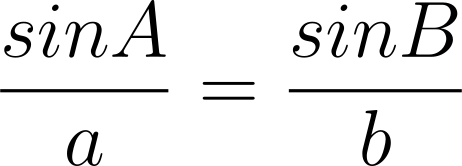
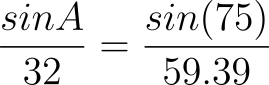
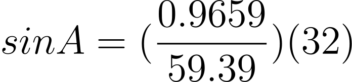
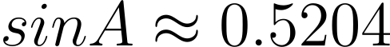
The final solution for ∠A = 31.35°
Lastly, we can find the last angle be subtracting the two angles by 180°.
∠B = 180° - 75° - 31.35° = 73.65°